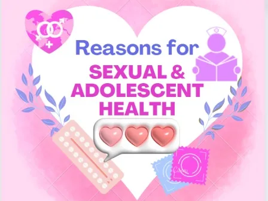
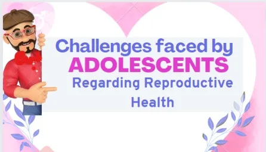

Expanded Nursing Uganda Explanation
Adolescent Reproductive Health should be understood beyond a short definition. Link the concept to patient history, focused assessment, common risks, nursing priorities, documentation and evaluation of outcomes.
Contents, 13 sections (tap to expand)
01 ADOLESCENT REPRODUCTIVE HEALTH
Adolescent Reproductive Health (ARH) is a state of complete physical , mental and social well being and not merely the absence of disease or infirmity , in all matters relating to the reproductive system of people between the ages of 10 and 19 .
Adolescent sexual and reproductive health refers to the physical and emotional wellbeing of adolescents and includes their ability to remain free from unwanted pregnancy, unsafe abortion, STIs (including HIV/AIDS), and all forms of sexual violence and coercion.
The rapid increase in the numbers of adolescents/young people points to the potential to contribute positively to the socio-economic and political development of the country. However, if not well directed, it can lead to consequences that may be harmful to the health status of the entire population.
Young people are vulnerable to all kinds of health challenges by virtue of their level of willingness to take risks and limited information. This includes R.H problems such as STIs/HIV/AIDs, early or unwanted pregnancy, unsafe abortion and psychosocial problems such as substance abuse, sexual abuse, delinquency etc.
Factors that predispose them to vulnerability include economic issues such as poverty, over dependence on adults or lack of employment opportunities. The majority of these young people are engaged in subsistence agriculture or petty trade in the informal sector. This situation is worsened by lack of adequate social services, characterized by low access to information, low demand and utilization of R.H services, high school dropouts and an unconducive teaching and learning environment in schools and health facilities.
02 DEFINITION OF TERMS
- Adolescent : This refers to a boy or girl aged between 10-19 years.
- Youth : This represents the period between childhood and adulthood or the transition from dependence in childhood to independence and awareness of interdependence as members of a community. According to the Uganda constitution, youths are considered to be between 18-30 years.
- Adolescence : This is a gradual process in which a child grows and develops into an adult, beginning at 10 years and continuing until the age of 18-19 years.
- Young person : A young person is a boy or girl aged between 10-24 years old.
- Puberty : These are reproductive changes that occur during adolescence, this is the period when adolescents reach sexual maturity and become capable of reproduction. In males, it usually starts between 10-14 years and stops between 15-17 years of age, characterized by the enlargement of external genitalia and increased pubic hair growth. In females, puberty can begin as early as 9 years of age, marked by breast enlargement and development at 9-13 years, with menarche (start of periods) occurring later between 11-15 years.
- Sexual health: This is a state of physical, mental, and social well-being in relation to sexuality. It goes beyond the mere absence of disease, dysfunctions, or infirmity. Sexual health requires a positive approach to sexuality and sexual relationships, ensuring the possibility of having pleasurable and safe sexual experiences, free of coercion, discrimination, and violence. Achieving and maintaining sexual health necessitates the respect and fulfilment of the sexual rights of all individuals.
- Sexuality : This is the sexual knowledge, beliefs, attitudes, values, and behaviours of individuals. It includes identity, orientation, roles, personality, thoughts, feelings, and relationships. The expression of sexuality is influenced by ethical, spiritual, cultural, and moral concerns.
03 Reasons for sexual and adolescent health
- Protecting and Promoting Adolescent Rights : To protect and promote the rights of adolescents of the rights of adolescents to health, education, information and care.
- Creating Supportive Legal and Socio-cultural Environments: To create an enabling legal and socio-cultural environment that promotes provision of better health information and services for young people.
- Involving Adolescents in Health Program Development : Actively engaging adolescents in the conceptualization, design, implementation, monitoring, and evaluation of adolescent health programs, which ensures programs are relevant and effective.
- Developing Responsible Health Behavior : Fostering responsible health-related behavior among adolescents, with a focus on equitable and respectful relationships, helps them navigate gender issues as they transition to adulthood.
- Legal and Social Protection : Promotion of legal and social protection of young people especially the girl child against harmful traditional practices and all forms of abuse including sexual abuse, exploitation, trafficking and violence.
- Training Providers and Reorienting Health Systems: Adequately training healthcare providers and restructuring health systems at all levels helps meet the unique needs of adolescents.
- Advocating for Increased Resources: Advocating for increased resource commitment for the health of adolescents in conformity with their numbers, needs and requirements at all levels.
- Enhancing Monitoring and Evaluation : Improvement of the capacity of local constitutions in monitoring and evaluation, research of adolescent health programs and needs and to promote dissemination and utilization of the relevant information to create awareness which influence behaviour change amongst individuals, communities, providers and leaders concerning adolescent health.
- Coordinating and Networking : To promote coordination and networking between different sectors and among NGOs/youth serving NGOs working in the field of adolescent health.
- Empowering Through Interventions : Encouraging interventions based on the capabilities and resources of youths empowers them to actively participate in their health and well-being.
04 Challenges Faced by Adolescents Regarding Reproductive Health:
In Uganda , adolescents suffer with severe health risks, including life-threatening challenges related to unwanted pregnancies, HIV/AIDS, and sexually transmitted infections (STIs) . Adolescence, marked by experimentation and risk-taking, exposes individuals to various vulnerabilities. Key factors contributing to adolescent susceptibility to sexual and reproductive health problems include:
- Substance Abuse : Widespread substance abuse, including marijuana, khat (mairungi), and Cuba, poses significant health and social challenges, with devastating impacts on the well-being of young people.
- Mental Health Issues : Adolescents face mental health problems due to societal pressures, impacting their psychosocial development, self-esteem, and academic performance. Psychoactive drug use further contributes to self-inflicted mental health issues.
- Injuries from Accidents or Violence : Young people’s proclivity for risk-taking activities makes them prone to accidents, leading to physical injuries and, in severe cases, fatalities. Substance abuse, such as alcohol and smoking, can exacerbate this issue.
- Occupational Health Problems : Limited employment opportunities force many young people into harsh working conditions, both in formal and informal sectors.
- Nutrition Challenges : Adolescents require proper nutrition for growth, energy, and immunity. Common nutritional issues include poor growth, anaemia, and micronutrient deficiencies, which can have long-term consequences on their health.
- Socio-economic Consequences (Poverty): Unhealthy adolescents strain educational systems, limit contributions to national development, and jeopardize the stability of future generations. Investing in the health of young people is crucial for broader societal well-being.
- STIs, including HIV/AIDS : Uganda faces a serious health socio-economic problem with high rates of STIs/HIV/AIDS among young people, significantly impacting morbidity and mortality. Early onset of sexual activity contributes to the rising prevalence after 15 years of age.
- Unwanted Pregnancies and Unsafe Abortions : Adolescents experience high rates of unwanted pregnancies and unsafe abortions due to low contraceptive use. This leads to maternal mortality and morbidity, affecting both the young mothers and their infants.
- Harmful Traditional Practices : Practices like early marriage, female genital mutilation, gender-based violence, and inheritance violations violate adolescent rights, particularly in sexual and reproductive health, leading to adverse health outcomes.
- Lack of Awareness and Correct Information : Insufficient awareness and misinformation regarding the risks of unwanted pregnancies and STIs.
- Peer and Social Pressures : Influence from peers and societal expectations leading to risky behaviours.
- Lack of Skills to Resist Pressures : Inadequate skills to resist societal pressures and engage in safe behaviours.
- Absence of Youth-Friendly Services : Limited access to youth-friendly sexual health and counselling services.
- Poverty : Economic challenges contributing to vulnerability.
- Cultural Norms : Traditional cultural norms, such as young men expected to initiate sexual encounters with prostitutes, fostering risky behaviours.
- Limited Power to Resist Coercion : Inability to resist persuasion or coercion into unwanted sexual encounters.
- Educational Challenges : Dropping out of school, resulting in unattained goals and loss of opportunities.
- Impact on Self-Esteem : Loss of self-esteem due to guilt and damage to reputation.
- Fatal Consequences : Potential outcomes include death and life-threatening situations.
- Teenage Pregnancy Risks: Higher risk of morbidity and mortality, complications during labor, and associated health risks.
- Unsafe Abortion : Adolescent unwanted pregnancies often lead to unsafe abortion, posing significant health dangers.
- Female Genital Cutting/Mutilation : Severe reproductive health consequences for affected girls.
- Sexual Violence : Physical trauma, unintended pregnancy, STIs, psychological trauma, and increased likelihood of high-risk sexual behavior.
- Child Prostitution : Engagement in risky behavior with potential physical and psychological repercussions.
- Endemic Diseases : Health challenges associated with diseases like tuberculosis and malaria.
05 Management and Preventive Measures for Reproductive Health Problems:
- Health Education : Providing comprehensive health education to adolescents, addressing major concerns such as HIV/AIDS and pregnancies.
- Advocacy for Sex Education : Promoting the inclusion of sex education in primary and secondary school curricula.
- Family Planning Advocacy : Encouraging sexually active adolescents to use family planning methods to prevent early pregnancies.
- Post-Abortion Care Services : Advocating for accessible post-abortion care services to reduce complications resulting from abortion.
- Discouraging Early Marriages : Promoting initiatives to discourage early marriages among teenage adolescents.
- Parental Education : Educating parents about proper nutrition practices for their children.
- Community Sensitization: Sensitizing community members about the availability of ANC services for adolescents.
- Involvement in Preventive Services : Engaging adolescents in HIV/AIDS preventive services.
- Advocacy for Mental Health Services : Advocating for the availability of mental health services tailored to the needs of adolescents.
- Community Awareness : Sensitizing communities about the importance of adolescent reproductive services.
Focus Areas for Adolescent and Sexual Reproductive Health:
- Behavior Change Counseling
- Provision of Adolescent-Friendly Services
- Provision of Contraceptive Services
- Screening and Management of STIs
06 Importance of Sexual and Adolescent Health:
- Promotes good health, especially among adolescent girls.
- Essential for effective safe motherhood strategies.
- Provides a framework for policy development.
- Identifies gaps in policy and barriers to services.
- Reduces maternal mortality due to early pregnancy.
07 Factors Influencing Reproductive Health Needs of Adolescents:
- Age : The stage of adolescence significantly affects reproductive health needs, considering the diverse physical and emotional changes during this period.
- Marital Status : Adolescents who are married may face different reproductive health challenges compared to unmarried peers, including early pregnancies and family planning decisions.
- Gender Norms: Societal expectations and norms related to gender can impact the reproductive health needs of adolescents, influencing behaviours and choices.
- Sexual Status: Sexual activity or inactivity plays a crucial role in determining the reproductive health needs of adolescents, including concerns related to contraception and sexually transmitted infections (STIs).
- School Status : Adolescents in educational settings may have various reproductive health needs, including access to sexual education and resources within schools.
- Child Bearing Status : Whether adolescents have experienced childbirth or are in the process of childbearing can significantly influence their reproductive health requirements.
- Rural/Urban Residence : The geographical location of adolescents, whether in rural or urban areas, can impact the accessibility of reproductive health services and information.
- Peer Pressure : Influence from peers can shape adolescents’ attitudes and behaviours, potentially affecting their reproductive health decisions.
- Cultural/Political Conditions : Cultural and political factors within a society can create an environment that either supports or restricts access to reproductive health services and information.
- Economic Status : The economic background of adolescents can influence their access to healthcare resources, family planning options, and overall reproductive health services.
- Educational Attainment : The level of education achieved by adolescents can impact their understanding of reproductive health issues and their ability to make informed decisions.
08 Adolescents at High Risk:
- Pregnant Below 18 Years : Pregnancies at a young age pose specific challenges related to maternal health and childbearing.
- Post-partum and Post-abortion : Adolescents who have recently given birth or undergone an abortion may require specialized reproductive health care.
- Adolescents in Labour: Those in the process of childbirth may need immediate and appropriate medical attention to ensure a safe delivery.
- Adolescents with STIs : Those with sexually transmitted infections require prompt diagnosis, treatment, and preventive education.
- Married Adolescents : Early marriages can present unique reproductive health challenges, including family planning decisions and maternal health concerns.
09 Adolescents with Special Needs:
- Sexually Abused : Victims of sexual abuse require sensitive and comprehensive reproductive health support.
- Drug and Substance Abusers : Substance abuse can impact reproductive health.
- Mentally and Physically Challenged : Adolescents facing mental or physical challenges may need specialized care and accessible reproductive health information.
- Adolescents Needing Pregnancy Prevention : Those seeking to prevent pregnancy require education on contraception and family planning methods.
- Menstrual Problems like Excessive Bleeding : Adolescents experiencing menstrual issues, such as excessive bleeding, may need medical attention and guidance.
- Problems Related to Growth and Development: Issues related to overall growth and development may require holistic care, considering both physical and emotional well-being.
Growth and Development in Adolescents
Click Here
10 Nursing Uganda Clinical Lens
Use Adolescent and reproductive health as a practical nursing topic, not only a memorized definition. Start with normal structure and function, then connect it to assessment findings and disease.
- What to understand first: define adolescent and reproductive health, identify the normal or expected pattern, then explain what changes when the patient is unwell.
- Why it matters in care: the nurse must recognize risk early, explain findings clearly, document accurately and know when to escalate.
- How to revise it: connect each point to assessment, nursing diagnosis or care problem, intervention, rationale and evaluation.
11 Assessment Guide
- Relevant inspection, palpation, movement, auscultation, vital signs or neurological checks.
- Normal findings, abnormal findings and what each abnormality may indicate.
- Patient history, risk factors and how the body system affects other systems.
12 Nursing Priorities, Rationales and Outcomes
- Use anatomy to explain symptoms and guide focused assessment.
- Recognize findings that need urgent escalation.
- Teach the patient using simple body-system language.
The rationale for these priorities is patient safety: nursing actions should prevent deterioration, reduce discomfort, support recovery and create clear evidence for the next caregiver.
- Expected outcome: The learner can explain normal function, identify abnormal signs and connect them to nursing action.
13 Patient Teaching and Revision Check
- Explain adolescent and reproductive health in simple language the patient or caregiver can repeat back.
- Teach warning signs, medicine or follow-up instructions, hygiene or lifestyle points where relevant.
- For exams, prepare a short answer using: definition, causes or risk factors, signs, assessment, management, complications and prevention.
- For ward practice, document baseline findings, actions taken, patient response and the plan for review.
Illustrations and Diagrams (3)


Related Video Lectures
Watch nursing lecture videos on YouTube for this topic. Opens in a new tab.
Watch on YouTubeExternal link: YouTube may use its own cookies and terms. Nursing Uganda is not affiliated with YouTube.